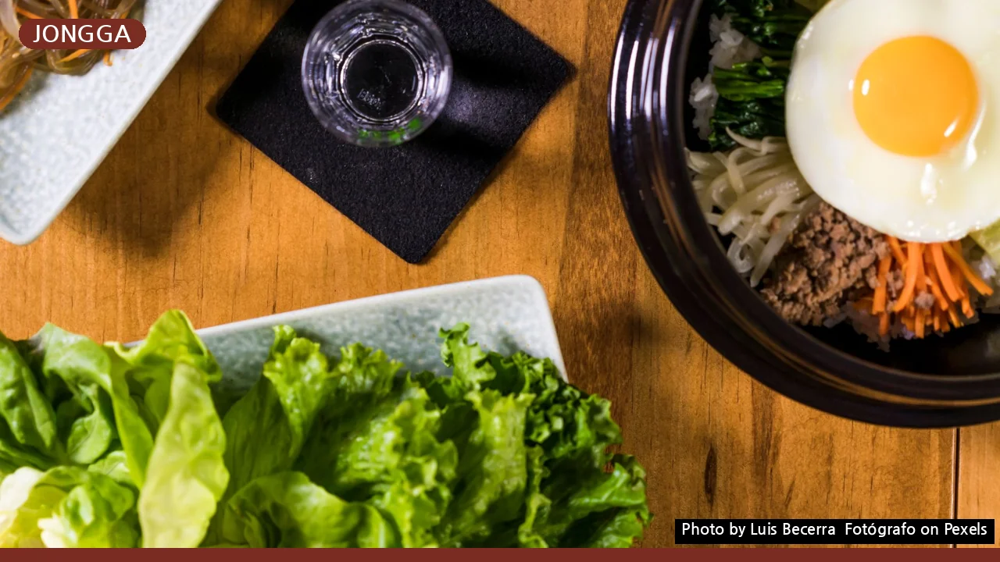
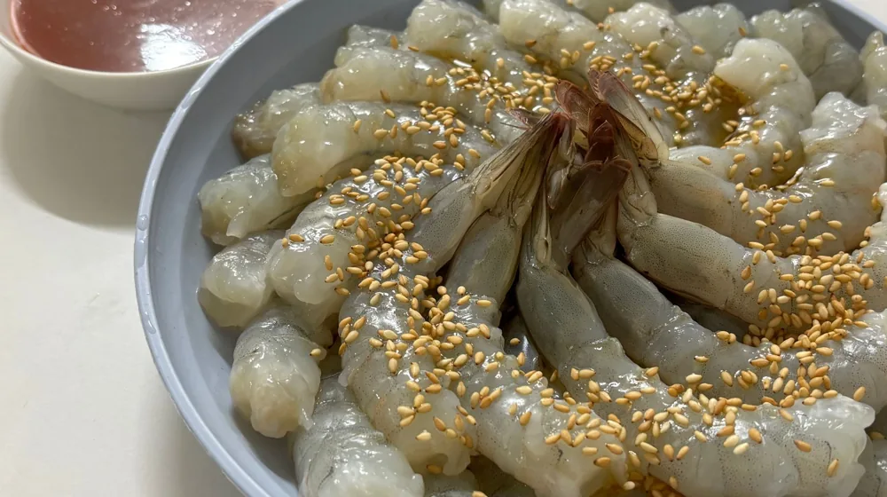

종가음식과 한정식, '이것' 때문에 격이 다르다? 진짜 차이점 완벽 비교
사진: Luis Becerra Fotógrafo / Pexels (무료 이미지, 출처 표기)
종가음식과 한정식, 무엇이 다른 걸까?

한국의 전통 음식을 대표하는 종가음식과 한정식은 많은 분들이 비슷하게 생각하지만, 사실 그 뿌리와 지향하는 가치에서 큰 차이를 보입니다. 단순히 맛있는 한 끼를 넘어, 한국 문화의 깊이를 체험하고 싶다면 이 두 가지 음식의 본질을 이해하는 것이 중요합니다.
종가음식은 대대로 이어져 내려오는 특정 가문의 전통 요리를 의미하며, 주로 조상에게 올리는 제례(제사) 음식이나 가문의 특별한 손님을 대접할 때 쓰였습니다. 반면 한정식은 다양한 한국 음식을 코스 요리처럼 내는 식사 형태로, 현대에 와서 발전한 외식 문화에 가깝습니다.
핵심 속성 비교: 계승과 확장
종가음식과 한정식은 음식의 기본을 이루는 철학과 방식에서 뚜렷한 차이를 보입니다. 종가음식은 '전통의 계승'에 초점을 맞추어 가문의 레시피를 보존하고 재현하는 데 중점을 둡니다. 이는 한 가문의 역사이자 정체성을 담고 있죠.
이에 반해 한정식은 한국 음식의 '확장과 다양성'을 추구합니다. 특정 가문에 얽매이지 않고, 지역 특색이나 계절 식재료를 활용해 다채로운 요리를 선보이며, 때로는 현대적인 조리법이나 플레이팅을 시도하기도 합니다.
다음 표를 통해 두 음식의 주요 속성 차이를 한눈에 비교해 보세요.
조리법과 상차림의 미학적 차이
음식을 만드는 방식과 차려내는 모습에서도 종가음식과 한정식은 각자의 미학을 보여줍니다. 종가음식은 대개 화려함보다는 '정갈함과 본연의 맛'을 중시합니다. 자극적인 양념을 최소화하여 식재료 본연의 맛을 살리고, 담음새 또한 소박하지만 기품 있는 멋을 추구합니다.
상차림 또한 간소하면서도 격식을 갖추어 조상에 대한 공경이나 손님에 대한 존중을 담아냅니다. 이렇듯 종가음식은 하나의 요리라기보다 긴 시간 축적된 가문의 지혜와 정신이 깃든 문화유산에 가깝습니다.
반면 한정식은 '시각적 아름다움과 풍성함'을 강조합니다. 오방색(적, 청, 황, 백, 흑)을 활용한 화려한 색감과 섬세한 플레이팅으로 눈을 즐겁게 하고, 다양한 종류의 음식을 한 상 가득 차려내 풍요로운 미식 경험을 선사합니다. 이는 특히 손님을 기쁘게 하고 환대하는 한국인의 정서를 담고 있습니다.
종가음식과 한정식을 즐기는 방법
두 음식을 경험하는 방식 또한 다릅니다. 종가음식은 일반 식당에서 쉽게 찾기 어렵습니다. 주로 한국문화재재단이나 지방자치단체에서 주관하는 종가음식 체험 프로그램, 또는 특정 종가가 직접 운영하거나 레시피를 전수한 식당을 통해 맛볼 수 있습니다. 방문 전 예약이 필수이며, 가문의 역사와 음식에 대한 설명을 함께 들을 수 있어 더욱 깊이 있는 경험이 가능합니다.
한정식은 전국 각지의 한정식 전문점이나 고급 호텔 레스토랑에서 쉽게 찾아볼 수 있습니다. 정통 궁중 한정식부터 현대적으로 재해석한 퓨전 한정식, 특정 지역의 특산물을 활용한 향토 한정식까지 종류가 매우 다양합니다. 가격대 또한 천차만별이므로 취향과 예산에 맞춰 선택의 폭이 넓습니다.
나에게 맞는 선택 가이드 및 주의할 점
어떤 음식을 선택할지는 개인의 취향과 경험 목적에 따라 달라질 수 있습니다. 만약 깊은 역사와 전통, 그리고 특정 가문의 정신이 담긴 '진정성 있는 맛'을 경험하고 싶다면 종가음식 체험을 추천합니다. 이는 단순히 식사를 넘어 한국의 유서 깊은 문화를 오감으로 느끼는 특별한 기회가 될 것입니다.
반면, 다채로운 한국 요리의 향연을 즐기며 '시각적으로도 만족스러운 풍성한 식사'를 원한다면 한정식이 좋은 선택입니다. 격식 있는 모임이나 외국인 손님 접대 시에도 다양한 요리를 한 번에 맛볼 수 있는 한정식이 만족도를 높일 수 있습니다.
주의할 점은 종가음식은 그 특성상 상시 운영되지 않거나 소규모로 진행되는 경우가 많아 미리 정보를 확인하고 예약해야 합니다. 한정식의 경우, 가격대가 높을수록 재료의 신선도나 조리법의 완성도가 높아지는 경향이 있으므로, 방문하려는 식당의 후기를 꼼꼼히 살펴보는 것이 좋습니다. 정확한 정보는 각 종가 또는 한정식 전문점의 공식 홈페이지나 해당 기관에서 다시 확인하시길 권장합니다.
🔗 이 글도 함께 보면 좋아요: 명예훼손 성립 조건, 이것 모르면 후회합니다: 실제 사례로 보는 법률 가이드
관련 추천 상품
이 포스팅은 쿠팡 파트너스 활동의 일환으로, 이에 따른 일정액의 수수료를 제공받습니다.